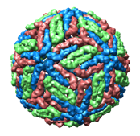
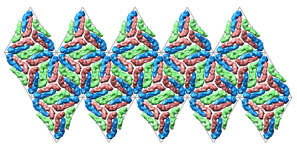
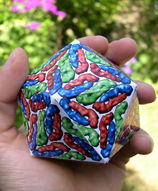
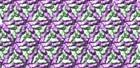

Flatten Icosahedron

Flatten Icosahedron rearranges the faces of an icosahedral virus capsid
from Multiscale
Models into a plane. This flat view can be
saved as an image,
printed, and folded into a paper icosahedron model.
| Dengue virus 1k4r |
flattened
(larger version suitable for printing) |
folded paper model |
|  |
 |
 |
There are several ways to start
Flatten Icosahedron, a tool in the
Higher-Order Structure category.
The capsid subunit coordinates should first be opened in Chimera
and the complete capsid generated with
Multiscale
Models using
Icosahedral symmetry, xyz 2-fold axes (VIPER).
This is done automatically when a structure is
fetched from the
Virus
Particle Explorer database (VIPERdb) or a local
VIPER file is read.
This tool will not work on structures that are not multiscale models,
even if they have the correct type of symmetry.
All multiscale models present will be affected.
When Flatten is clicked, the twenty triangular faces
of an icosahedral capsid are laid out in a plane. The orientations
of the faces relative to the structure are assumed based on the
known symmetry. Each chain is associated with the
triangular face whose center is closest to the geometric center of the chain.
To generate the planar arrangement, a common rotation and translation are
applied to all the chains of a given face.
The chains and faces remain three-dimensional;
each face is simply repositioned relative to the others.
Unflatten reverses the process.
Close dismisses the Flatten Icosahedron dialog,
and Help opens this manual page in a browser window.
- The Radius controls the spacing of faces in the plane.
If an ideal tetrahedron were flattened using a radius equal to that
of the smallest sphere it fits within, the triangular faces would exactly abut.
Larger radii would generate triangles in the flattened state larger than
the faces of the original ideal tetrahedron.
If the Radius field is blank, the largest distance between
the capsid center and an atom in the capsid will be used.
Changes in the value can be applied by clicking Flatten
(it is not necessary to unflatten before reflattening).
- Show triangle mesh indicates whether the triangles should be
outlined in the flattened state. The lines can be used as guides for
cutting and folding to produce a paper model. The color
of the lines can be specified by clicking the
color well
and using the
Color Editor.
The lines can be moved in front of the plane (so that they are not obscured
by parts of the structure) by entering a z offset value
and pressing Enter (return).
- Use orthographic camera mode turns off perspective. This is
important for generating an undistorted image of the flattened tetrahedron.
The projection mode
(perspective or orthographic) can also be controlled with the
Camera tool.
Further, it is important to keep the plane of the flattened structure
normal to the line of sight. If the structure was rotated after flattening,
the correct orientation can be restored with the command
reset.
Before saving an image,
it may be desirable to adjust display parameters, in general (see the
tips on preparing images)
and in
Multiscale
Models. For example, when a multiscale model is first created,
the original chains may not be shown as surfaces like the rest of
the chains. To remedy this,
select
the chains with loaded atoms and change them to the
surface style
as well.
NOTES
| 1m1c flattened |
1m1c flattened and tiled |
 |
 |
Tiling.
Cutting and folding to make a paper model chops away parts of proteins
that straddle triangle boundaries. Tiling the image allows parts of a
cut protein to appear on both sides of the cut lines when taped together.
Tiling is not necessary, but improves the appearance of the final model.
Currently, Chimera cannot perform the tiling, so a separate image-editing
program must be used. GIMP was used in the example shown here. Steps:
- Create a flat icosahedron image in Chimera with a transparent background.
If system hardware permits, background transparency can be enabled in
the Effects tool.
(Only high-end graphics cards support this feature; if not available,
use the image-editing program to make the background transparent instead.)
- In the image-processing program, make four copies of the image
and place them around the border of the original image. In GIMP, this is
done using "duplicate layer" and the "move layer" mouse mode.
The "stacking order" of the image copies may affect the appearance.
In this example, the four surrounding copies were placed below the
original image. The resulting tiling is not perfect; ideally, along a
border the copy should be above the original in some places
and below it in others.
Known icosahedral symmetry.
This tool uses the icosahedral reference frame where 2-fold axes are
along the x, y and z axes,
called Icosahedral symmetry, xyz 2-fold axes (VIPER) in
the Multiscale
Models dialog. To use a different reference frame requires
a small change to the Python code. Specifically, you would
change the '222' in file
share/FlattenIcosahedron/__init__.py to '222r', or '2n5', or '2n3'.
Refer to file share/Icosahedron/__init__.py
for the definitions of these alternate reference frames.
UCSF Computer Graphics Laboratory / October 2007
{kind=link}